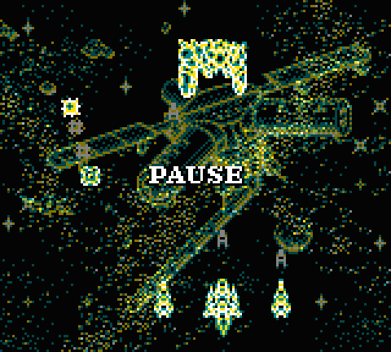
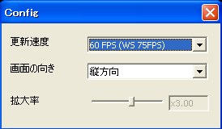
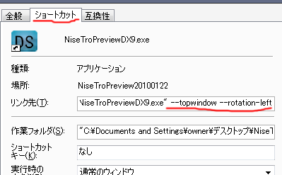
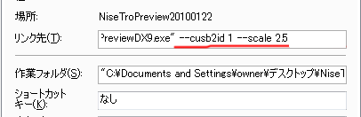

概要
このソフトは、偽トロキャプチャからリアルタイムに画面を取り込見ながらプレイすることを目指して作成しました。
画面の回転(90度単位で左右回転)・拡大・残像再現などができ、ゲーム中に本体の向きを変えながらプレイするゲームにも対応しています。
使い方
ハード毎に対応したファームウェアを書き込み済みのカメレオンUSBFX2をＰＣに挿して起動してください。
メニュー

[メニュー]
[スクリーンショット]
スクリーンショットを撮ります。
[録画]
現在、機能停止中です。
[Filter]
拡大縮小に使うフィルターを選択します。
[残像機能]
残像があるハードの残像を擬似的に再現します。
GBソフトで高速点滅するものはGBCモードを使うと半透明表現が再現されます。
[終了]
クリックすると、アプリケーションを終了します。
[設定]
[回転]
画面を縦方向・左回転・右回転に設定できます。
[倍率]
画面の倍率を等倍・２倍・３倍に設定できます。
[更新速度]
画面更新速度を60fps・30fps・20fps・15fpsに選択できます。
[ハード選択]
キャプチャするハードを選択します。
事前に必ず対応ファームウェアを書き込んでおいてください。
[デバイスID]
複数のカメレオンUSBFX2を使い分けることが出来ます。通常は0で問題ありません。
[常に手前に表示]
常に手前に表示することができます。
もう一度クリックすると、解除できます。
[エラーフレームを表示しない]
PC<->NDS間で通信エラーが起き、乱れた画像を受信しても表示しないようにできます。
もう一度クリックすると、解除できます。
乱れた画像が表示されていないあいだは、最後に表示された正常な画像が表示され、新しく正常な画像が来るまで更新されません。
[設定]

設定ダイアログを開きます。
[画面の選択]・[回転]・[画面の隙間]・[倍率]をそれぞれ設定できます。
[画面の隙間]・[倍率]については、メニュー選択よりも細かく指定できます。
[情報]
更新速度などの情報をダイアログに表示します。
コマンドラインオプション
| --dropframe | エラーフレームの描画方法を表示しない |
| --topwindow | 常に手前に表示する |
| --scale <倍率> | 画面の拡大率を指定 |
| --rotation-left | 左回転させて表示する |
| --rotation-right | 右回転させて表示する |
| --frameskip-60fps | フレームスキップ(60fpsで表示) |
| --frameskip-30fps | フレームスキップ(30fpsで表示) |
| --frameskip-20fps | フレームスキップ(20fpsで表示) |
| --frameskip-15fps | フレームスキップ(15fpsで表示) |
| --cusb2id <ID> | 使用する偽トロキャプチャを指定する
カメレオンＵＳＢ FX2のデバイスID番号を指定してください。 |
設定方法
ショートカットを作成してください。
作成したショートカットを選択し、右クリックしてメニューから「プロパティ」を選択してください。
「ショートカットタブ」内の「リンク先」の一番最後に半角スペースを入れてから、コマンドラインオプションを追加してください。

例1：「
"～～\NiseTroPreviewDX9.exe" --topwindow --rotation-left」
「常に手前に表示」「画面の左回転」のオプションを指定しています。

例2：「
"～～\NiseTroPreviewDX9.exe" --cusb2id 1 --scale 2.5 」
「デバイスIDを1」「拡大率を2.5倍」のオプションを指定しています。
ライセンス
偽トロプレビューのライセンスは、LGPLv2.1以降です。
偽トロプレビューは、DirectX SDK、MSXML、ffmpeg、msinttypesを使用しています。
謝辞
もともとDSのキャプチャ用に作られた偽トロキャプチャですが
ピピン氏及びMM氏両名がオープンソースで開発していたため
他のハードをキャプチャすることができるようになりました。
ピピン氏及びMM氏両名に感謝いたしております。
ピピン氏のブログ：
偽トロキャプチャと車とかとか
MM氏が配布していた場所：
偽トロプレビュー置き場(閉鎖中)